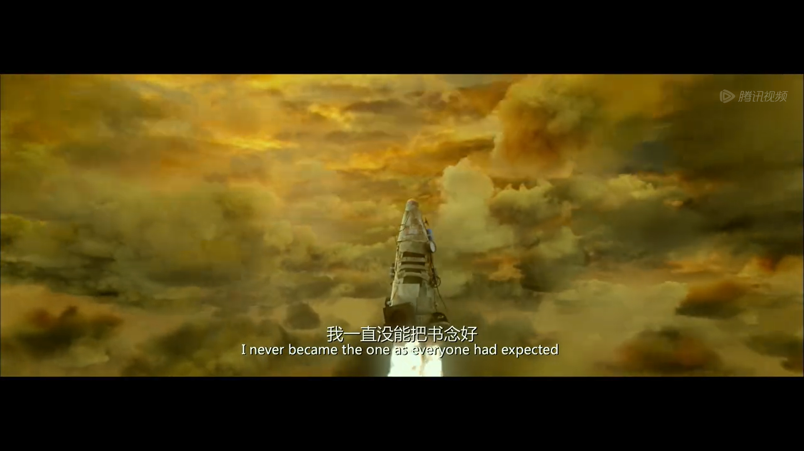

嗨，你好啊，我的朋友👋
这里是小明
- 🏫 一个人菜瘾大的经济统计专业大二学生
- 🤔 喜欢一切新鲜事物
- 💻 私下学过python，机器学习，爬虫
- 🏖️ Don’t settle
进入大学后野蛮生长的这两年里越来越希望自己的声音可以被听见
一直希望有可以同行的人，而不是一个人稀里糊涂走下去

💕欢迎大家添加我的博客哦，互相交流学习💕
- name: 爱编程的小明
link: https://kebuaaa.github.io/
avatar: https://kebuaaa.github.io/img/avatar.png
descr: 不要温和地走进那个良夜 放一个视频与诸位共勉
评论